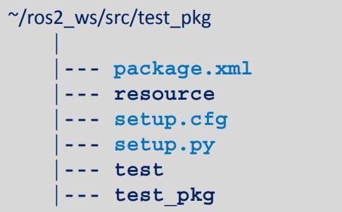
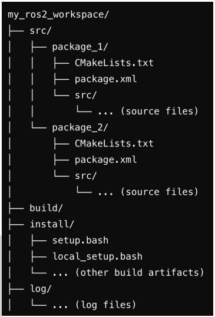
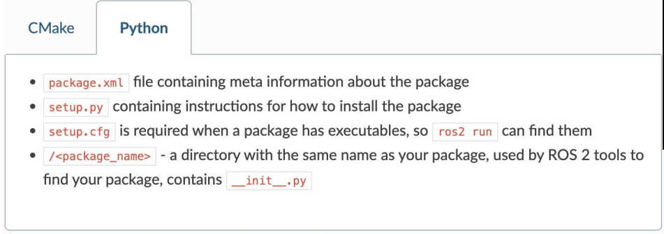
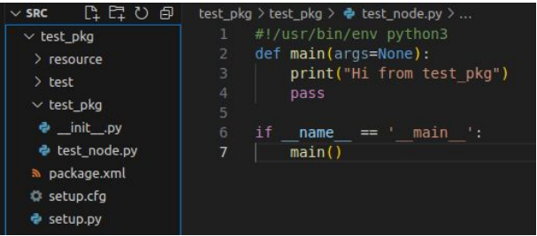
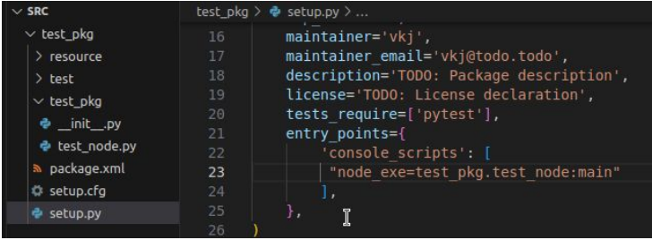
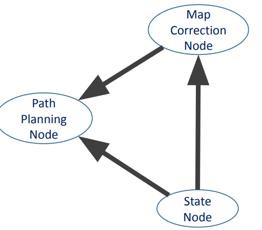

ROS2 Core Concepts [Creating a Python Package]

Python Package
Python Packages are a way to organize and structure your Python code into reusable components. Think of it like a folder that contains related Python files (modules) that work together to provide certain functionality. Packages help keep your code organized, make it easier to manage and maintain, and allow you to share your code with others. They're like a toolbox where you can store and organize your tools (functions and classes) for easy access and reuse in different projects.
~$ ros2 pkg -h~$ ros2 pkg create -h
~/ros2_ws/src$ ros2 pkg create --build-type ament_python test_pkg


Executing Node as Python Script
~/ros2_ws/src $ cd ..colcon buildAlternative Method:
~/ros2_ws $ colcon build --packages-select test_pkg~/ros2_ws/src/test_pkg/test_pkg $ colcon build --packages-select test_pkg~/ros2_ws/src/test_pkg/test_pkg $ touch test_node.py~/ros2_ws/src/test_pkg/test_pkg $ chmod +x test_node.py~/ros2_ws/src/test_pkg/test_pkg $ ./test_node.pyNo error, but, nothing is displayed
Open src in vscode and open test_node.py. Write a small node to print "Hi from test_package"
~/ros2_ws/src/test_pkg/test_pkg $ ./test_node.py$ Hi from test_package
Executing the Script as Python Package
Open setup.py. Add "node_exe=test_pkg.test_node:main"
~/ros2_ws$ colcon build~/ros2_ws $ ros2 run test_pkg node_exeOpen test_node.py.
Change to "Hi from test_package-1". Save
~/ros2_ws $ ros2 run test_pkg node_exeNo change observed. To see changes, build again
Building with --symlink-install
Changes to source files are immediately reflected in the install space when we use "--symlink-install" option with colcon build.
Make sure you have setuptools version 58.2.0. Check using pip3 and grep
~$pip3 install setuptools==58.2.0~/ros2_ws $[2] colcon build --symlink-install~/ros2_ws $ ros2 run test_pkg node_exe$ Hi from test_package - 1
Change to "Hi from test_package-2".
~/ros2_ws $ ros2 run test_pkg node_exe$ Hi from test_package - 2
~/ros2_ws $[2] ros2 run test_pkg node_exe$ Hi from test_package - 2
Close all the terminals. Open again. Run package
~/ros2_ws $ ros2 run test_pkg node_exe$ Package 'test_pkg' not found
~/ros2_ws $ ros2 run test_pkg test_nodeEdit test_node.py in any editor; we will use vscode. Change the text to "Hi from ROS Node" and observe the changes in the output. There are None.
~/ros2_ws $ colcon build --packages-select test_pkg~/ros2_ws $ ros2 run test_pkg test_nodeObserve the changes in the output. The output text changes from "Hi from test_package" to "Hi from ROS Node"
Setting '--symlink-install' Default
Create the directory (if it doesn't exist):
mkdir -p ~/.colconCreate the defaults.yaml file:
nano ~/.colcon/defaults.yamlAdd your desired configuration settings to defaults.yaml.
build: symlink-install: trueNavigate to the root directory of your workspace:
Create the colcon.defaults.yaml file:
nano colcon.defaults.yamlAdd your desired configuration settings to colcon.defaults.yaml.
build: symlink-install: trueYou can verify that your settings are being applied by running colcon and observing the behavior or by inspecting the build logs.
Creating Python Node
A typical ROS program consists of the following operations:
- Initialization
- Create one or more ROS nodes
- Process node callbacks
- Shutdown
rqt is a graphical user interface (GUI) tool for ROS 2. Everything done in rqt can be done on the command line, but rqt provides a more user-friendly way to manipulate ROS 2 elements.
ROS2 Commands : 'list' and 'info'
ros2 -hros2 run -hros2 noderos2 topicros2 serviceros2 service -hros2 node listros2 topic listros2 service listros2 action listros2 node inforos2 topic inforos2 service inforos2 action infoUse ros2 node list to discover active node names.
Use ros2 node info to introspect on a single node.
ros2 pkg listros2 pkg --helpThe ros2 pkg list command is a command-line tool used in ROS 2 to list all the packages that are available in the system.
When this command is executed, ROS 2 searches the package paths defined in the AMENT_PREFIX_PATH environment variable and lists all the packages it finds. The output is a list of package names, one per line.
This command is useful when working with ROS 2 as it allows the user to quickly check which packages are available in the system, and can be used as a starting point for building, testing, or using ROS 2 packages. It can also be used to check if a specific package is installed in the system or to verify that a new package has been added to the AMENT_PREFIX_PATH correctly.
Using Domain ID and Localhost
~$ export ROS_DOMAIN_ID=user_defined_domain_id~$ export ROS_LOCALHOST_ONLY=1ROS2 Messages
Messages are the data structures that are used to exchange information between nodes.
ROS 2 uses a the interface definition language (IDL), to describe these interfaces.
This description makes it easy for ROS tools to automatically generate source code for the interface type in several target languages.
Messages are described and defined in .msg files in the msg/directory of a ROS package. .msg files are composed of two parts: fields and constants.
A data structure is a storage that is used to store and organize data.
It is a way of arranging data on a computer so that it can be accessed and updated efficiently.
fieldtype1 fieldname1
fieldtype2 fieldname2
fieldtype3 fieldname3
int32 my_int
string my_string
A single node can publish to multiple topics, subscribe to multiple topics, offer multiple services, and provide multiple actions. The specific implementation depends on the requirements of the system being built and the design choices made by the developer.
Thank You. End of ROS2 Core Concepts.